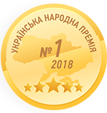

Награждена компания GoIT за вклад
в подготовку сильных Junior-специалистов
Награжден сооснователь GoIT Андрей Пивоваров
за выдающийся вклад в IT-обучение украинских Junior-разработчиков.
Победа в номинации IT-образование 2018
Всеукраинский национальный проект определил GoIT лидером в отрасли IT образования.
